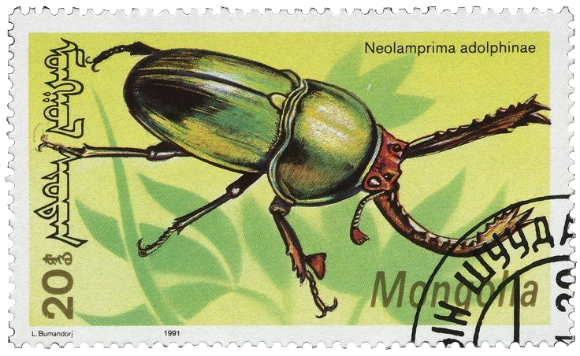

Deer Mask Archive
ver 4.0
"In a beautiful place out in the country."
"As a child, I considered such unknowns sinister. Now, though, I understand they bear no ill will. The universe is, and we are."
Welcome
Hi! I'm Ari, a biologist/vaguely creative person. This webpage is my personal library to catalog the ever-growing amorphous mass of my creative endeavours and scattered interests. What started off as a small experiment in HTML development quickly became a hobby in and of itself, and the website has changed quite a bit in the few years since its inception. Enjoy the sights and look around.
Please note that this site is not mobile-friendly, and is best viewed on a 1920 x 1080 display.



some more bullshit